Smart Plant Pot
Eigenes CAD-designtes Topfsystem für perfekte Elektronikintegration mit IoT-Sensorik und App-Steuerung zur automatisierten Pflanzenbewässerung.
Studienprojekt & Privater Gebrauch
Details →
Konstruktion & Detailaufbau
Der Pflanzentopf wurde in 3D-CAD entworfen, um Elektronik, Sensoren und Wassertank kompakt und geschützt in einem Gehäuse unterzubringen.
Modularer Schichtenaufbau:
Trennung von Innentopf, Außenhülle und Elektronikfach für einfache Wartung.
Präzise Sensorführungen:
Passgenaue Aussparungen für Bodenfeuchte- und Füllstandssensoren.
Bewässerungsausgang (Gehäusebohrung)
Austrittsöffnung im Topfgehäuse: Durch dieses Loch tritt der Schlauch der Wasserpumpe aus, um das Wasser direkt zur Pflanze zu führen.
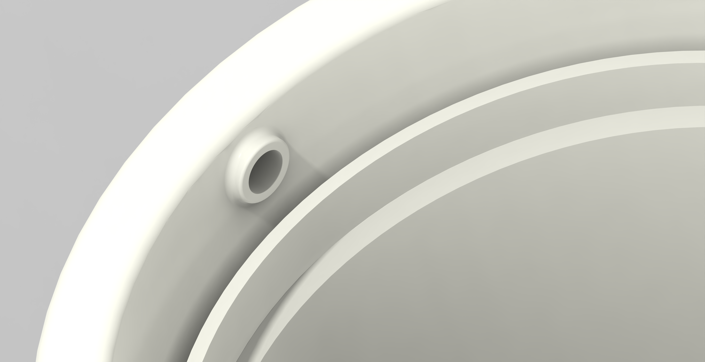
Interaktiver 3D WebGL Viewer
Ziehen zum Drehen • Scrollen zum Zoomen
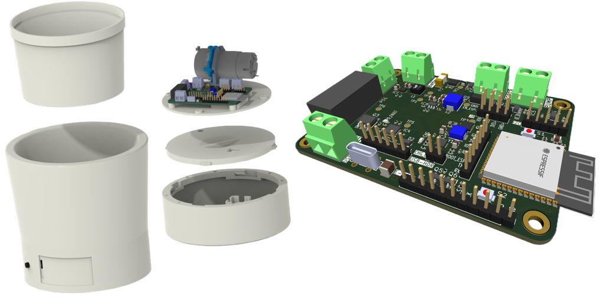
Beschreibung
Studienprojekt: Erstellung eines automatisierten Systems zur Pflanzenbewässerung. Das Projekt beinhaltet die Entwicklung eines intelligenten Pflanzentopfes mit integrierten Sensoren und Bluetooth-Anbindung an die Android-App.
Hauptfunktionen & Highlights
Geräteverwaltung & IoT
Verwaltung mehrerer Pflanzentöpfe mit Microcontroller-Sensoren, einfacher Registrierung & Custom-Namen.
Sensordaten & Messwerte
Messung von Bodenfeuchtigkeit, Temperatur & Luftfeuchtigkeit inkl. historischer Verlaufsdiagramme.
Push-Benachrichtigungen
Echtzeit-Warnungen via Firebase Cloud Messaging für kritische Wasserstände & Batteriewerte.
Pflanzenkatalog
Umfangreicher Zimmerpflanzen-Katalog mit Pflege-Tipps & hochauflösenden Wikimedia Commons Bildern.
WLAN- & µC-Assistent
Geführter Hardware-Einrichtungsassistent via QR-Code Scan für schnelle Inbetriebnahme.
Sicherheit & Cloud
PostgreSQL-Datenbank auf Supabase-Basis mit Row-Level Security (RLS) & TLS-Verschlüsselung.
Screenshots & Demo-Videos
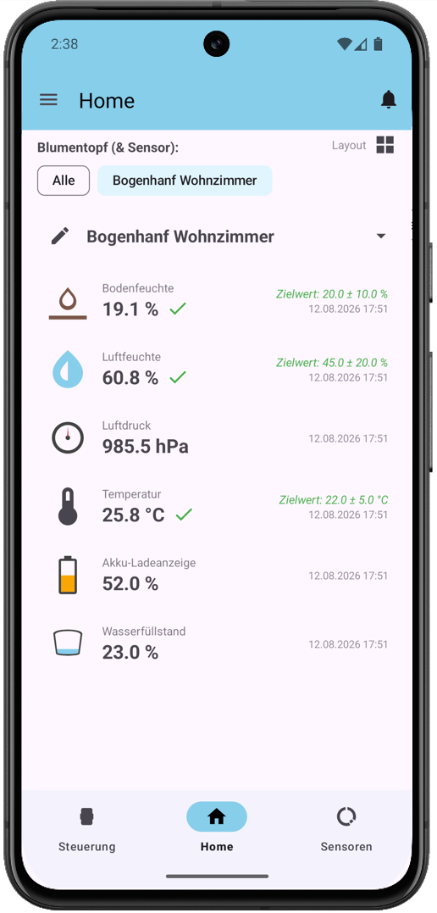
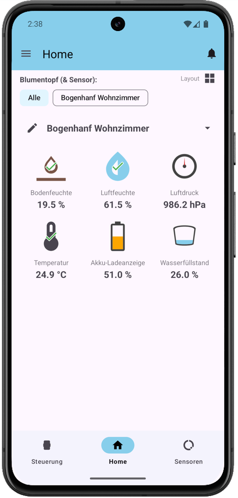
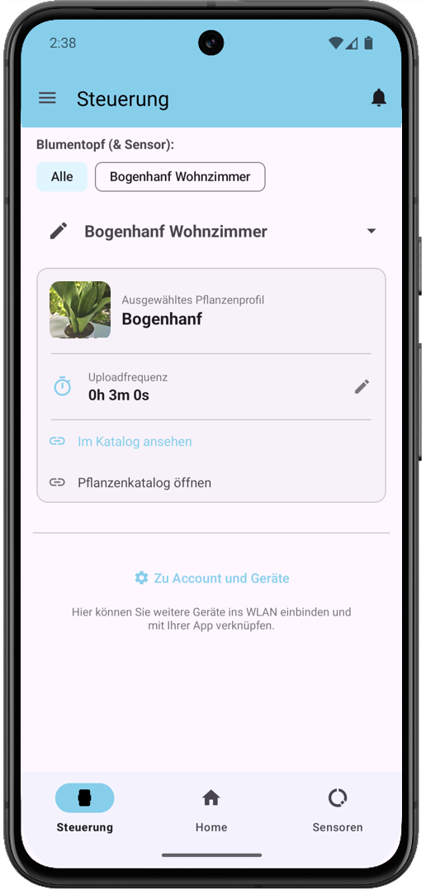
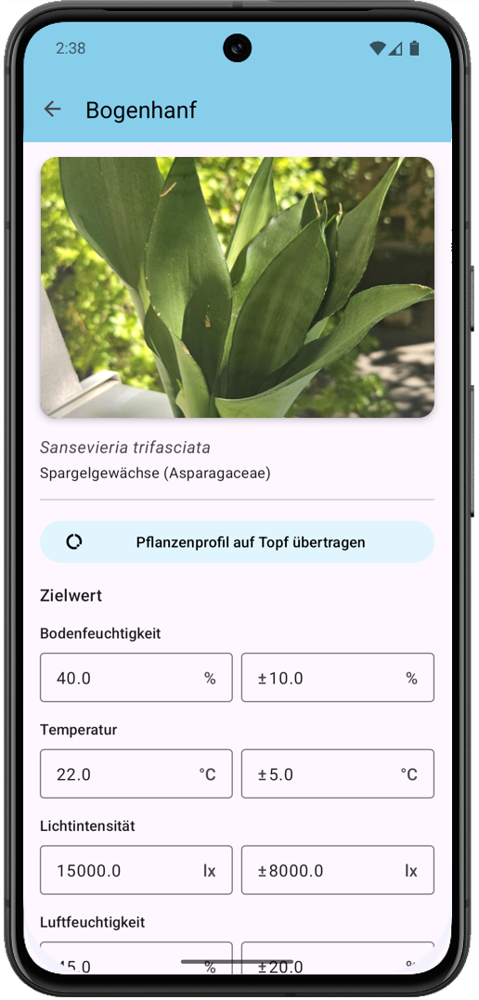
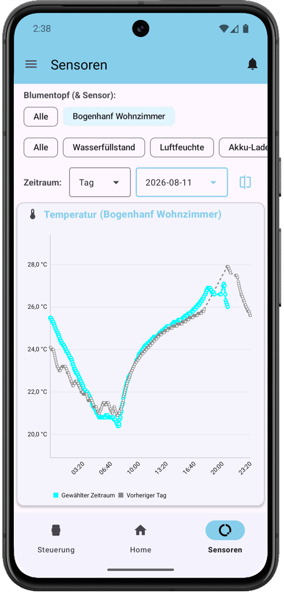
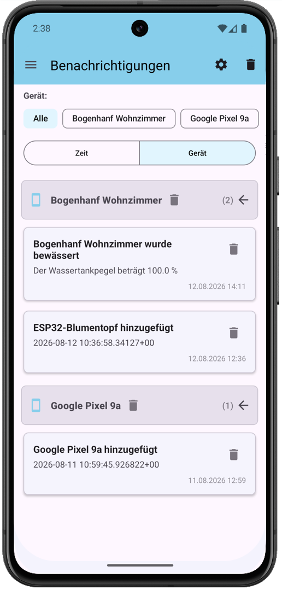
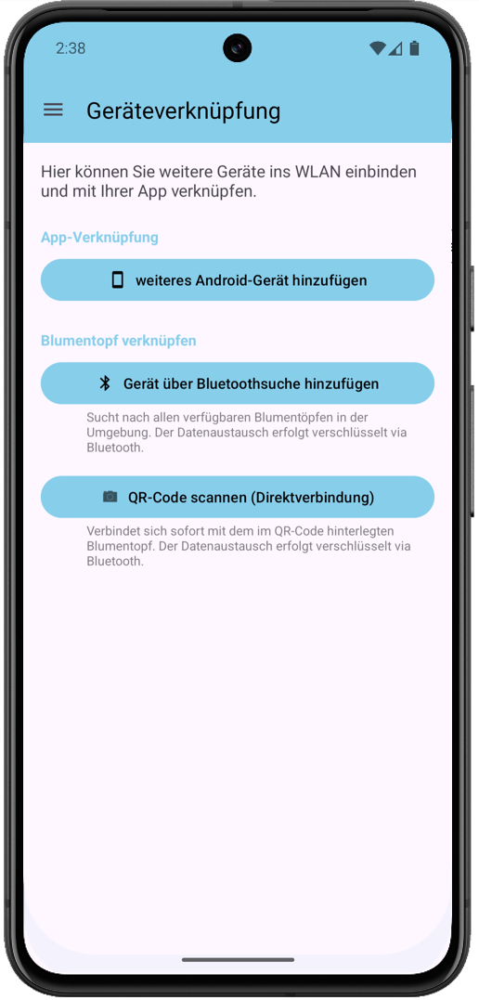
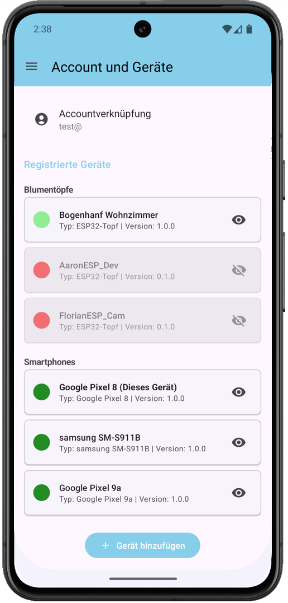
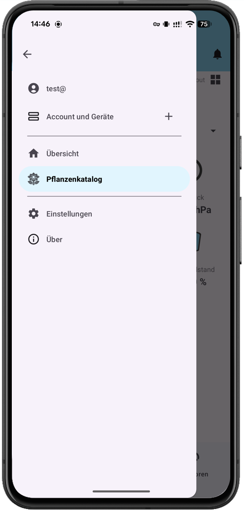
Technische Spezifikationen
Version
0.1.3 (14)
Dateigröße
57.9 MB
Zuletzt Aktualisiert
09.08.2026
Ziel-Plattform
Android 15 (API 35)
Dokumente & Lizenzen
Changelog
Vollständige Versionshistorie von v0.0.1 bis zur aktuellen Version mit allen Änderungen und Bugfixes.
App-Handbuch (README)
Handbuch mit Einblick in Appfunktionalitäten und Architektur.
Drittanbieter-Hinweise
Übersicht der verwendeten Open-Source Bibliotheken, Lizenzen & Wikimedia Commons Attributierungen.
Hinweis zu Demonstrationszwecken & Haftungsausschluss
Diese Landing Page dient primär als interaktives Poster und zur Visualisierung des Studienprojekts. Die App und das Repository werden ausschließlich zu Demonstrationszwecken gezeigt. Eine Installation auf eigenen Geräten wird nicht empfohlen, da die Anwendung ausschließlich in Kombination mit dem physischen Smart Plant Pot Blumentopf-Prototypen funktioniert und andernfalls keinen Mehrwert bietet – es besteht keinerlei Haftung.
Was ist F-Droid & warum wird es empfohlen?
F-Droid ist ein lizenzfreier Open-Source App-Store für Android. Über die F-Droid App erhält deine Installation automatische Sicherheits- und Funktions-Updates direkt aus unserem Studienprojekt-Repository.
Schritt 1
 F-Droid Download-Seite
F-Droid Download-Seite
F-Droid Client App
Falls F-Droid noch nicht installiert ist,
lade zuerst die offizielle Client-App herunter:
Schritt 2
Repo Hinzufügen
Scanne diesen QR-Code in F-Droid
(Einstellungen → Paketquellen → + Icon):
Direkt-Download der APK-Datei
Alternative manuelle Installation direkt ohne F-Droid Client:
Nicht empfohlen: Beim Direkt-Download der APK werden keine automatischen App-Updates empfangen. Für automatische Updates verwende bitte die F-Droid Installation (Schritt 1 & 2).